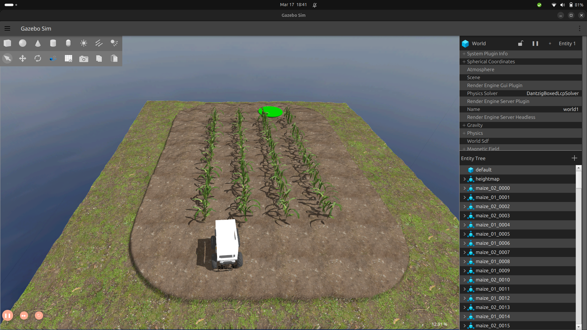

Configurer votre PC avec Docker sous Windows¶
Ce guide vous guidera tout au long du processus de configuration d’un environnement Ubuntu et d’un espace de travail ROS sur votre PC Windows à l’aide de Docker, ce qui vous permettra de développer et de tester facilement vos projets ROS dans un environnement conteneurisé. Nous expliquerons également comment connecter VS Code au conteneur Docker et comment utiliser X11 pour exécuter des applications GUI Docker.
Remarque
Ce guide est conçu pour les personnes qui envisagent d’utiliser l’image Docker. Si vous souhaitez configurer votre PC et votre espace de travail sur une machine hôte, veuillez consulter les instructions fournies dans Configurer votre espace de travail.
Conditions préalables¶
Avant de commencer les étapes ci-dessous, assurez-vous que vous disposez des éléments suivants :
- Docker Desktop pour Windows installé et en cours d’exécution
- Code Visual Studio (Code VS) installé
- Git installé
Étape 1 : Installez VcXsrv¶
- Téléchargez et installez VcXsrv sur votre ordinateur.
- Installez VcXsrv en exécutant le programme d’installation et en suivant les invites.
- Une fois l’installation terminée, ouvrez le VcXsrv en cliquant sur le menu Démarrer et en tapant “XLaunch”.
- Dans la fenêtre XLaunch, sélectionnez l’option
Plusieurs fenêtreset cliquez surSuivant.
-
Dans la fenêtre suivante, sélectionnez l’option
Démarrer aucun clientet cliquez surSuivant.
-
Dans la fenêtre suivante, sélectionnez l’option “Presse-papiers” et cliquez sur “Suivant”. Désélectionnez l’option
Native openglet sélectionnez l’optionDisable access control.
- Dans la fenêtre suivante, cliquez sur “Terminer”.

Étape 2 : Création du dossier principal et de docker-compose.yml¶
- Créez un nouveau dossier à votre emplacement préféré et nommez-le comme vous le souhaitez.
-
Dans le dossier nouvellement créé, créez un espace de travail ROS en exécutant la commande suivante dans powershell :
-
Ensuite, créez un fichier
docker-compose.ymldans le dossier principal. Ce fichier contiendra la configuration de notre conteneur ROS Docker. Ouvrez le fichier dans votre éditeur préféré et ajoutez les lignes suivantes :Cette configuration extraira l’image officielle de PARC 2023, si elle n’existe pas déjà, et la configurera pour la prise en charge du serveur X11. Il montera également le dossierversion : '3.8' prestations de service: rose : image : parcengineersleague/parc-2023 environnement: - AFFICHAGE=host.docker.internal:0.0 - ROS_HOSTNAME=ros - ROS_MASTER_URI=http://ros:11311 tomes : - ./catkin_ws:/catkin_ws ports : - "11311:11311" commande : roscorecatkin_wsà l’intérieur du conteneur et lancera la commanderoscoreau démarrage du conteneur. -
Enregistrez le fichier
docker-compose.ymlet fermez votre éditeur.
Étape 4 : Construire le conteneur Docker¶
-
Ouvrez une nouvelle fenêtre de terminal et accédez au dossier principal que vous avez créé précédemment.
-
Exécutez la commande suivante pour créer le conteneur Docker :
-
Une fois le conteneur créé, vous pouvez vérifier qu’il est en cours d’exécution en exécutant la commande suivante :
Vous devriez voir la sortie suivante :
Étape 5 : Ouvrir un terminal dans le conteneur Docker¶
-
Pour ouvrir un terminal dans le conteneur Docker, exécutez la commande suivante :
oùparc-ros-docker-ros-1est le nom du conteneur. Vous pouvez trouver le nom du conteneur en exécutant la commandedocker ps. -
Une fois le terminal ouvert, vous pouvez vérifier que vous êtes dans le conteneur en exécutant la commande suivante :
Vous devriez voir la sortie suivante :
Cela signifie que vous êtes dans le conteneur et que la distribution ROS est définie sur Noetic.
Étape 6 : Tester l’installation¶
Si vous avez terminé les tâches précédentes avec succès, vous devriez pouvoir exécuter cette commande de lancement ROS et voir le simulateur Gazebo et le simulateur RViz s’ouvrir avec l’affichage suivant :
 Fenêtre du simulateur de belvédère Fenêtre RViz
Fenêtre RViz
Vous devez publier/écrire dans le sujet /cmd_vel pour déplacer le robot.
Dans l’étape suivante, vous apprendrez à contrôler le robot manuellement à l’aide de votre clavier. Une fois que vous avez testé cela, vous pouvez suivre le guide Commencer avec ROS pour apprendre à écrire un programme pour contrôler le robot.
Étape 7 : Contrôler le robot à l’aide du clavier¶
Exécutez la commande suivante dans un nouveau terminal
Maintenant, en gardant le deuxième terminal en haut (teleop.launch), appuyez sur i pour faire avancer le robot, vous pouvez voir le robot se déplacer dans les fenêtres “RViz” et “Gazebo”.
vous pouvez utiliser les touches ci-dessous pour déplacer le robot et la touche “k” pour arrêter le mouvement.
Étape 8 : Développer à l’intérieur du conteneur avec VSCode¶
-
Installez l’extension Dev Containers dans VSCode.
-
Cliquez sur l’icône verte dans le coin inférieur gauche de la fenêtre VSCode et sélectionnez “Ouvrir le dossier dans le conteneur…”.
-
Sélectionnez le dossier
catkin_ws. -
VSCode va maintenant ouvrir le dossier
catkin_wsà l’intérieur du conteneur. -
Vous pouvez maintenant utiliser VSCode pour modifier les fichiers dans le dossier
catkin_ws.
Alternativement, puisque nous avons déjà créé un volume pour le dossier catkin_ws, vous pouvez également utiliser votre éditeur préféré pour modifier les fichiers dans le dossier catkin_ws sur votre machine hôte. Les modifications seront reflétées à l’intérieur du conteneur. L’avantage d’utiliser VSCode dans le conteneur est que vous pouvez utiliser le terminal intégré pour exécuter des commandes à l’intérieur du conteneur.